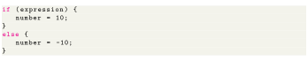
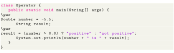

Next: When to use ternary Up: Control Flow and Decision Previous: Nested if..else Statement Contents
Ternary operator replaces the following code

With
Why name ternary operator? Because it uses 3 operands. Here, expression is a boolean expression which evaluates to either true or false. If it evaluates to true, expressionTrue is evaluated and assigned to variable number. If it evaluates to False, expressionFalse is evaluated and assigned to variable number.

When you run the program, the output will be: -5.5 is not positive.